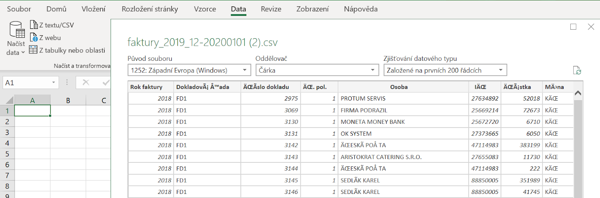

Hi, my name is VERONIKA
(That's right, with a "K")
Portfolio
Sustainability research
Read key findings from indices produced at Tortoise Media and see charts for the Climate & Energy Benchmark report at World Benchmarking Alliance.
Weekly Charts
Browse my data vis short reads written for the Datawrapper blog.

Feature stories
Travel in time and space with features I wrote for The Echelon, a Sri Lankan business magazine, at the turn of 2017 and 2018.

Women and work: Why so few?

Why values matter and how to nurture them in business

Private sector as a development partner
Other data-driven projects & visualizations
Take a look at some of my encounters with data so far.

Introduction to data analysis for journalism students (Excel)

Tourism in Sri Lanka
(ggplot, BBC style)

Tourism in Sri Lanka I.
(Flourish)